About this document
This document describes all currently implemented JUnit tests for henshin. Tests are roughly grouped by the feature tested. Whenever possible, the model graphs on which henshin's graph transformations are executed is shown as a picture to ease understanding the transformations.
Features of particular interest (e.g. created nodes) are highlighted in blue like this. Where relevant, edges have been annotated. Please note all models contain a containment node (cont) which has edges to all other objects. In most pictures in this documentation, the containment node and its edges have been hidden to achieve a clutter-free visual representation.
The test model
The test model has been specifically designed to use typical features one might find in real-world models.
It contains unidirectional and bidirectional edges as well as 1:1, 1:n and n:m edges.
There are three classes in the model: cont is the containment class used for serialization. Node models a node and has a single attribute, nodename. Val models a value, and has two attributes: Its name valname and its value intvl.
The test model can be used to model tree structures; each Node may have one parent and a number of children. This is modelled as a bidirectional edge. Additionaly, Nodes can have (edges to) Vals.
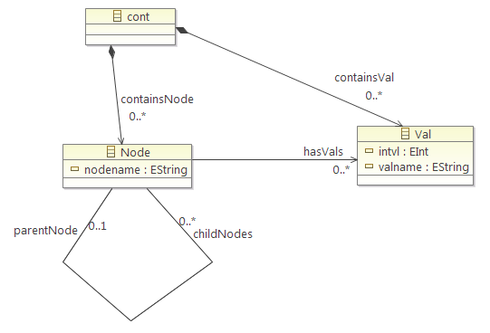
Matching engine tests
14 tests
These tests test various aspects of the matching engine.
All tests are implemented in MatchTests.java, all graphs used can be found in matchTestsModels. The associated henshin rule file is basicMatchingTests.henshin.
testACMatchNoNodes
- Graph used: manyNodes
- Rule used: acMatchNoNode

In this test, no nodes should be matched. The rule's left-hand side (LHS) and negative application condition (NAC) are identical, so there should not be any match in any case.
testMatchAllNodes
- Graph used: manyNodes
- Rule used: matchAllNodes

In this test, all Nodes are matched. The model graph contains 32 Nodes, so 32 matches are to be expected.
testACMatchAllNodes
- Graph used: manyNodes
- Rule used: acMAtchAllNodes
In this test, all Nodes are matched. This rule's LHS and positive application condition (PAC) are identical, so all Nodes matched by the LHS will be matched by the PAC as well. The model graph contains 32 Nodes, so 32 matches are to be expected.
testMatchNodesWithVals
- Graph used: nodesAndVals
- Rule used: matchNOdesAndVals

In this test, all Node with Vals are matched. Because the matched Node and Vals are connected by a unidirectional edge (hasVals), this tests matching elements based on their edges.
testEmptyRule
- Graph used: nodesAndVals
- Rule used: emptyRule
This tests what happens if the rule is completely empty. There should be exactly 1 match, but this match should be empty, i.e. contain no nodes from the graph.
testOnlyNAC
- Graph used: nodesAndVals
- Rule used: onlyNAC
This tests if rules containing only a NAC are matched correctly. There should be no match.
testOnlyPAC
- Graph used: nodesAndVals
- Rule used: onlyPAC
This tests if rules containing only a PAC are matched correctly. There should be exactly 1 match, but this match should be empty, i.e. contain no nodes from the graph.
testNestedPacPac
- Graph used: nestedACTests
- Rule used: nestedAC_pac-pac
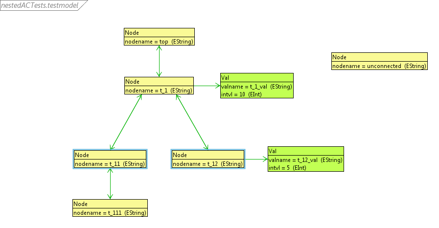
This tests if nested application conditions work correctly. A PAC is nested inside a PAC. A positive application condition matching a Node with a hasVals edge to a Val (2) is nested inside a positive application condition matching a parent and child node (1). There is a mapping between the Node in (2) and the parent node in (1). There also is a mapping between the Rule's LHS Node and the child node in (1).
So, this Rule should match a Node which has ([1] a parent Node which ([2] has an edge to a Val)). This is the case for t_11 and t_12.
testNestedPacNac
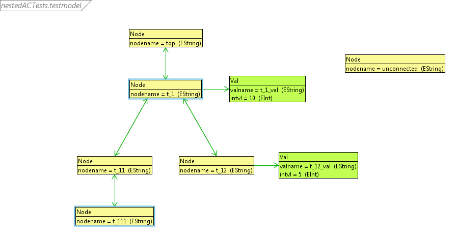
- Graph used: nestedACTests
- Rule used: nestedAC_pac-nac
This tests if nested application conditions work correctly. A NAC is nested inside a PAC. A negative application condition matching a Node with a hasVals edge to a Val (2) is nested inside a positive application condition matching a parent and child node (1). There is a mapping between the Node in (2) and the parent node in (1). There also is a mapping between the Rule's LHS Node and the child node in (1).
So, this Rule should match a Node which has ([1] a parent Node which ([2] doesn't have an edge to a Val)). This is the case for t_111 and t_1. It is not the case for unconnected (unconnected doesn't have a parent node).
testNestedNacPac
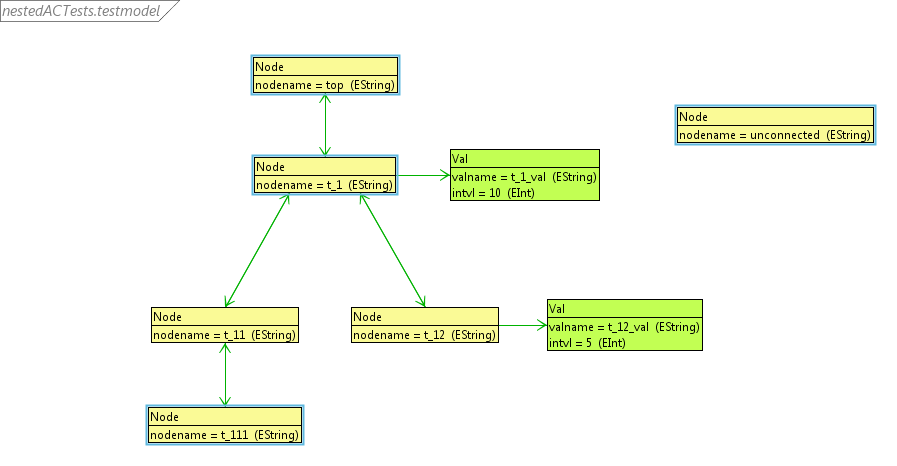
- Graph used: nestedACTests
- Rule used: nestedAC_nac-pac
This tests if nested application conditions work correctly. A PAC is nested inside a NAC. A positive application condition matching a Node with a hasVals edge to a Val (2) is nested inside a negative application condition matching a parent and child node (1). There is a mapping between the Node in (2) and the parent node in (1). There also is a mapping between the Rule's LHS Node and the child node in (1).
So, this Rule should match a Node which ([1] doesn't have a parent Node which ([2] has an edge to a Val)). This is the case for t111 (its parent node, t_11, doesn't have an edge to a Val), t_1 (its parent node, top, doesn't have an edge to a Val), top (top doesn't hava a parent node) and unconnected (unconnected doesn't have a parent node).
testNestedNacNac

- Graph used: nestedACTests
- Rule used: nestedAC_nac-nac
This tests if nested application conditions work correctly. A NAC is nested inside a NAC. A negative application condition matching a Node with a hasVals edge to a Val (2) is nested inside a negative application condition matching a parent and child node (1). There is a mapping between the Node in (2) and the parent node in (1). There also is a mapping between the Rule's LHS Node and the child node in (1).
So, this Rule should match a Node which ([1] doesn't have a parent Node which ([2] doesn't have an edge to a Val)). This is the case for t_11, t_12 (their parent node is t_1, which has an edge to a Val) and top and unconnected (top and unconnected do not have a parent node).
testAndNestedCondition
- Graph used: nestedACTests
- Rule used: andNestedCondition

This tests if AND operators work correctly. Two positive application conditions are linked using an AND operator, one matching Nodes with a parent node, the other matching Nodes with a child node. There is a mapping between the Rule's LHS Node and the respective Node in both PACs.
So, this Rule should match a Node which has a parent node and a child node. This is the case for t_1 and t_11.
testOrNestedCondition
- Graph used: nestedACTests
- Rule used: orNestedCondition
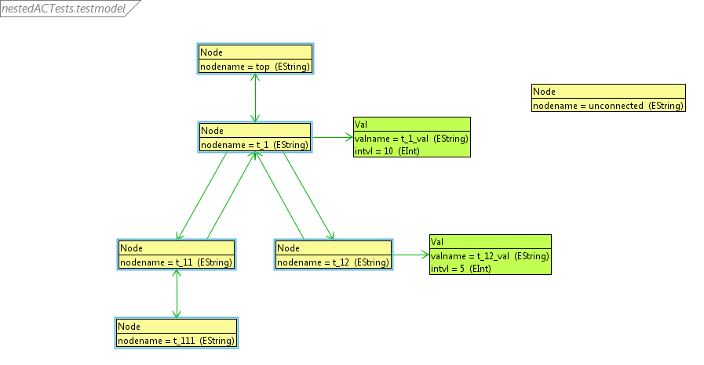
This tests if OR operators work correctly. Two positive application conditions are linked using an OR operator, one matching Nodes with a parent node, the other matching Nodes with a child node. There is a mapping between the Rule's LHS Node and the respective Node in both PACs.
So, this Rule should match a Node which has a parent node, a child node or both. This is the case for top, t_1, t_11, t_12 and t_111. It is not the case for unconnected.
testNotNestedCondition
- Graph used: nestedACTests
- Rule used: notNestedCondition

This tests if NOT operators work correctly. A positive application condition matching a Node with a parent node is negated using a NOT operator. There is a mapping between the Rule's LHS Node and the PAC's Node.
So, this Rule should match a Node which does not have a parent node. This is the case for top and unconnected.
Creating Nodes
4 tests
These tests test several aspects of Node creation. All tests are implemented in CreateNodes.java, all graphs used can be found in createNodesModels. The associated henshin rule file is basicTests.henshin
testCreateNodeWithContainmentEdge
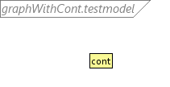
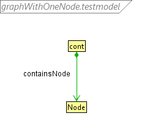
- Graph used: graphWithCont
- Rule used: createNodeWithContainmentEdge
In this test, a new Node with a containment edge should be created. The initial graph graphWithCont contains just the containment. Adding a Node with a containment edge should result in graphWithOneNode
testCreateNodeWithContainmentEdgeAndUnidirectionalEdgeToNode
- Graph used: graphWithOneNode
- Rule used: createNodeWithUnidirectionalEdge

In this test, a new node (type Val) with a unidirectional edge to a Node should be created.
testCreateNodeWithContainmentEdgeAndBidirectionalEdge3
- Graph used: graphWithOneNode
- Rule used: createNodeWithBidirectionalEdge3

In this test, a new Node with a bidirectional edge to an existing Node should be created. The rule used in this test specifies both directions of the bidirectional edge.
testCreateRootNode
- Rule used: createRootNode
In this test, a root node should be created in an empty graph.
Deleting Nodes
4 tests
These tests test several aspects of deleting Nodes. All tests are implemented in DeleteNodes.java, all graphs used can be found in deleteNodesModels. The associated henshin rule file is basicTests.henshin
testDeleteNodeWithContainmentEdge
- Graph used: graphWithOneNode
- Rule used: deleteNodeWithContainmentEdge
In this test, a Node with a containment edge should be deleted.
testDeleteNodeWithUnidirectionalEdge1
- Graph used: graphBefore_deleteNodeWithUnidirectionalEdge
- Rule used: deleteNodeWithUnidirectionalEdge1
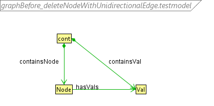
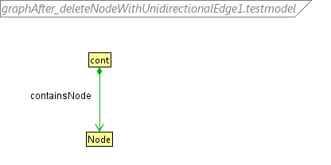
In this test, a node (of type Val) with an incoming unidirectional edge (hasVals) from a Node should be deleted (i.e. the containment edge and the incoming edge are removed, and the node is removed from the graph as well).
testDeleteNodeWithUnidirectionalEdge2
- Graph used: graphBefore_deleteNodeWithUnidirectionalEdge
- Rule used: deleteNodeWithUnidirectionalEdge2

In this test, a Node with an outgoing unidirectional edge (hasVals) should be deleted (i.e. the containment edge and the outgoing edge are removed, and the Node is removed from the graph as well).
testDeleteNodeWithBidirectionalEdge3
- Graph used: graphBefore_deleteNodeWithBidirectionalEdge
- Rule used: deleteNodeWithBidirectionalEdge3


The graph used for this test contains a containment and two Nodes with a bidirectional edge between them. One of these Nodes should be deleted, i.e. its containment edge and the bidirectional edge to the other Node should be removed and it should also be removed from the graph.
In this test, both components of the bidirectional edge are specified, and n2 should be deleted.
Creating and removing edges
4 tests
These tests test several aspects of creating and removing edges between nodes in the model graph. Tests on containment edges have already been implemented implicitly in the creating/deleting nodes tests. All tests are implemented in CreateDeleteEdges.java, all graphs used can be found in createDeleteEdgesModels. The associated henshin rule file is basicTests.henshin
Creating edges
testCreateUnidirectionalEdge
- Graph used: graphBefore_edgesCreateUnidirectionalEdge
- Rule used: edgesCreateUnidirectionalEdge
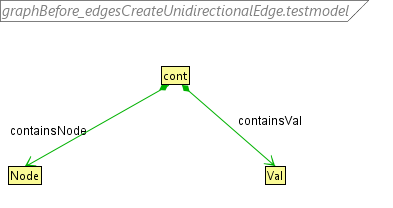
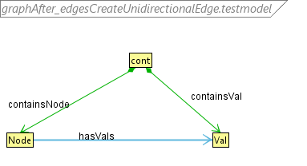
In this test, a unidirectional edge (hasVals) between a Node and a Val should be created.
testCreateBidirectionalEdge3
- Graph used: graphBefore_edgesCreateBidirectionalEdge
- Rule used: edgesCreateBidirectionalEdge3
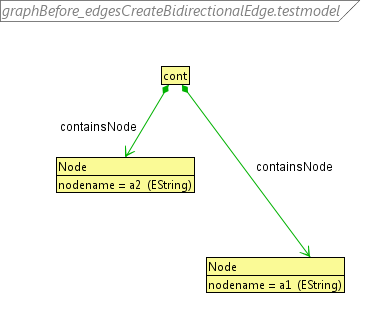

In this test, a bidirectional edge between two Nodes should be created. This is accomplished by specifying both component edges of the bidirectional edge (parentNode and childNodes).
Removing edges
testRemoveUnidirectionalEdge
- Graph used: graphAfter_edgesCreateUnidirectionalEdge
- Rule used: edgesRemoveUnidirectionalEdge
In this test, a unidirectional edge from a Node to a Val should be removed from the model graph.
testRemoveBidirectionalEdge3
- Graph used: graphAfter_edgesCreateBidirectionalEdge
- Rule used: edgesRemoveBidirectionalEdge1
In this test, a bidirectional edge should be removed. Both components of the bidirectional edge (parentNode, childNodes) are specified, so the edge should be removed.
Parameter tests
9 tests
These tests test various aspects of parameter handling. All Rules used for these tests are contained in parameterTests.henshin
testParameterName
- Graph used: paramTest
- Rule used: parameterName
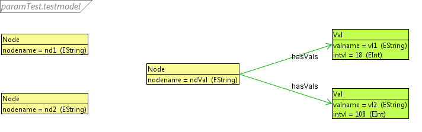

In this test, a String is passed as a parameter. The parameter is then used to match the nodename of a Node by using the parameter as an attribute in the Rule's LHS. If successful, nd1 will be deleted.
testParameterObject
- Graph used: paramTest
- Rule used: parameterObject
In this test, an Object is passed as a parameter. The parameter is then used to match a Node by using the parameter as a Node in the Rule's LHS. If successful, nd1 will be deleted.
testParameterInOut1
- Graph used: paramTest
- Rule used: parameterInOut
This tests correct parameter passing. First, an attribute name is set as a parameter. The Rule will match a Node, using the parameter to match the nodename. The matched node will then be assigned to another parameter.
If parameter handling is successful, the Rule's comatch should contain a parameter mapping between the parameter and the Node object.
testParameterInOut2
- Graph used: paramTest
- Rule used: parameterInOut
This tests correct parameter passing. First, a Node is set as a parameter. The Rule will match a Node, using the parameter to match the nodename. The matched node's nodename will then be assigned to another parameter.
If parameter handling is successful, the Rule's comatch should contain a parameter mapping between the parameter and the nodename.
testParameterTu
- Graph used: paramTest
- TransformationUnit used: parameterUnit
This tests if parameters are correctly handled in transformation units. The transformation unit used in this tests is a sequential unit which applies the Rules parameterInOut and parameterObject sequentially. A Node's nodename is passed via the parameter tu_param_in, which is then mapped to parameterInOut's param_ndname. parameterInOut's param_node is mapped to the parameter p2, and p2 is mapped to parameterObject's parameter param_nd. Effectively, the matched Node is passed to parameterObject and then deleted.
testParameterComposition1
- Graph used: paramTest
- Rule used: parameterComposition1
This tests composition of parameters by the engine. In this test, there are three parameters: p1, p2 and vl. vl is a Val on the LHS. The Rule sets the intvl (type: EInt) of vl to p1 + p2.
p1 is set to 20, p2 is set to 30. If the engine handles integer parameters correctly, the intvl of the value should equal 50.
testParameterComposition2
- Graph used: paramTest
- Rule used: parameterComposition2
This tests composition of parameters by the engine. In this test, there are three parameters: p1, p2 and vl. vl is a Val on the LHS. The Rule sets the valname (type: EString) of vl to p1 + p2.
p1 is set to 20, p2 is set to 30. If the engine handles parameters correctly, the valname of vl should equal "50" after execution.
testParameterComposition3
- Graph used: paramTest
- Rule used: parameterComposition2
This tests composition of parameters by the engine. In this test, therer are three parameters: p1, p2 and vl. vl is a Val on the LHS. The Rule sets the valname (type: EString) of vl to p1 + p2.
p1 is set to "20", p2 is set to "30". If the engine handles parameters correctly, the valname of vl should equal "2030" after execution.
testAttributeCondition1
- Graph used: paramTest
- Rule used: attribCond1
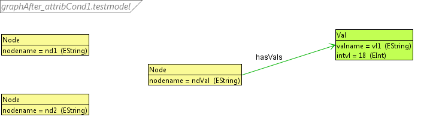
In this test, attribute conditions are tested. The attribute condition is set so that a Val with intvl > 20 will be deleted. This is the case for vl2 (intvl = 108).
Transformation Unit tests
13 tests
These tests test various aspects of Transformation Units. The Rules and TransformationUnits for these tests are contained in transformationUnitTests.henshin
amalgamationUnitTest
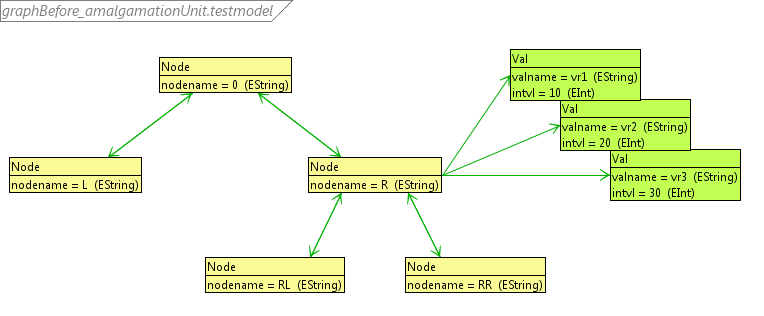
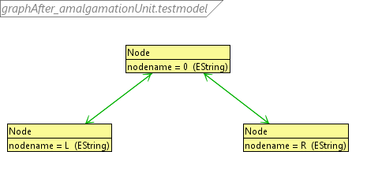
This tests the amalgamation unit. The amalgamation unit's kernel rule finds a Node with a specified nodename. The multi rules delete the Node's child nodes and Vals.
Executing the amalgamation unit with nodename = "R" should therefore delete the Nodes RL and RR as well as the values vr1, vr2 and vr3.
priorityUnitTest
This tests correct execution of the priority unit. A priority unit will execute the topmost subunit that can be executed.
The priority unit used for this test will apply deleteNodeWithVal or deleteVal. deleteNodeWithVal deletes a Node (which has no child Nodes, but a parent Node) with a hasVals edge to a Val. deleteVal deletes a Val.
When executing the priority unit the first time, LL and vl2 are matched by deleteNodeWithVal, so they are deleted.

When executing the priority unit the second time, L and vl1 are matched by deleteNodeWithVal, so they are deleted.

When executing the priority unit the third time, no remaining suitable Node-Val pairs for deleteNodeWithVal can be found, so a match for deleteVal is created. vl3 is matched by deleteVal, so it is deleted.
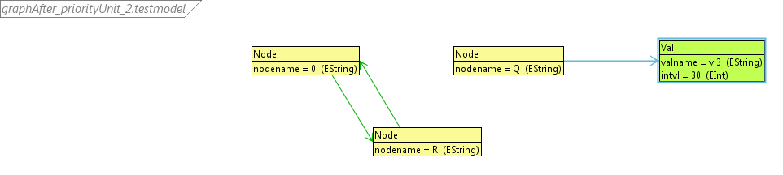

conditionalUnitTest


This tests the conditional unit. The condition Rule is findVal, which will be true if the value having the specified valname can be found. If the condition is true, the (existing) value vl1 will be changed to intvl=20. If the condition is false, the value vl1 will be created and will be set to intvl=15.
The conditional unit is executed two times on a graph containing just the containment. In the first run, the value will be created (testing the conditional unit's ELSE part). In the second run, the value will be modified (testing the conditional unit's IF and THEN part).
independentUnitTest
(1)


(2)


This tests the independent unit. Independent units randomly apply or execute their Rules/TransformationUnits. There are two Rules in the independent unit, one to create a Node node1 if it doesn't already exist, and one to create a Node node2 if it doesn't already exist.
The independent unit is executed until both Nodes have been created, but at most 100 times.
CountedUnit tests
countedUnitTest1
 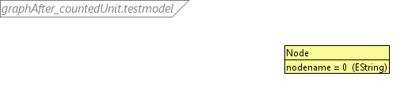
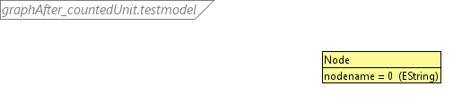
This tests executing the counted unit until no match can be found (count = -1). The Rule used for the counted unit deletes a child node at the bottom level, i.e. a Node with a parent node, but no child nodes. When running this until no match can be found, only the topmost node (nodename = 0) should remain.
countedUnitTest2
This tests executing the counted unit a fixed number of times (count = 8). As there are 8 child nodes, the counted unit should execute successfully and only the topmost node (nodename = 0) should remain.
countedUnitTest3
This tests executing the counted more often than matches can be found (count = 10). As there are 9 nodes in the graph, deleting 10 nodes will inevitably fail. Therefore, asserting the graph has been transformed into the graph containing just the topmost node (nodename = 0) should fail, which is the expected result of this test. (Note: This test will be successful if an AssertionError is thrown)
countedUnitTest3ReturnValue
This test tests the return value of an unsuccessful execution of countedUnit. As in countedUnitTest3, the counted unit is executed 10 times, which will fail. It should therefore return false.
countedUnitTest3Undo
This tests un-doing graph transformations. As in countedUnitTest3, the counted unit is executed 10 times, which will fail. Changes to the graph made by the execution of the CountedUnit will then be automatically undone, resulting in the exact graph as it was before executing the countedUnit.
countedUnitTest4
This tests executing counted units with negative counts (count = -2). It should therefore especially fail to transform the graph into what running the counted unit indefinitely (as with count = -1). (Note: This test will be successful if an AssertionError is thrown)
sequential unit tests
sequentialUnitTest
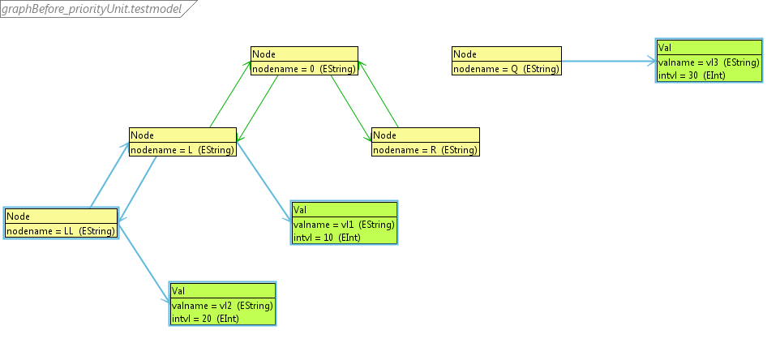
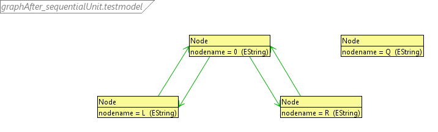
This tests the sequential unit. A sequential unit executs its subunits sequentially. The sequential unit used for this test will execute deleteVal, deleteNodeWithVal, deleteVal. (The second deleteVal is encapsulated in another transformation unit, as multiple identical rules are not supported in transformation units.)
deleteVal will delete vl1. deleteNodeWithVal will delete LL, vl2. deleteVal will delete vl3.
sequentialUnitTestUndo
This tests undo operations after a sequential unit has been executed and failed. In this case, changes to the graph made by the sequential unit will be un-done. This test will execute a sequential unit which will inevitably fail and then check if the graph after execution is equal to the graph before execution.
sequentialUnitTestUndo2
This tests undo operations after a sequential unit has been executed and failed. If the Rule applications are not un-done correctly, the behavior of transformation units executed after the failed execution can be different from the behavior on the initial graph, although it should be the same.
This test constructs a suitable scenario to assert that not only the graph's contents remain unchanged after the undo operation, but also that the graph's structure remains unchanged. The constructed sequential unit's behavior is highly dependent on match order (the first deleteVal has 3 matches; which Val will be used (and thus deleted) is dependent on the order of edges from the containment node), so changing the graph's structure will very likely lead to unexpected results.
Engine options tests
2 tests
These tests concern various configurable matching options.
testNonInjective1
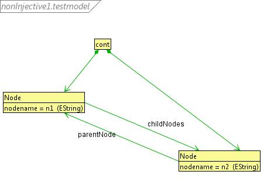
In this test, the non-injective matching mode is tested. The rule will produce a match containing a Node and its two child Nodes. First, with standard injective matching, this rule will produce no match, as there are no Nodes with two child nodes.
When injective matching is activated, finding matches for the rule will result in one match containing the Node once and its child Node twice.
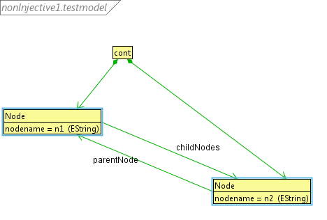
testNonInjective2
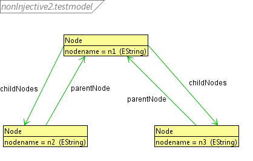
In this test, the non-injective matching mode is tested. First, with standard injective matching, the rule will produce 2 matches: (n1, (n2, n3)) and (n1, (n3, n2)).
When non-injective matching is turned on, the rule will produce 4 matches: (n1, (n2, n2)), (n1, (n2, n3)), (n1, (n3, n2)), (n1, (n3, n3)).